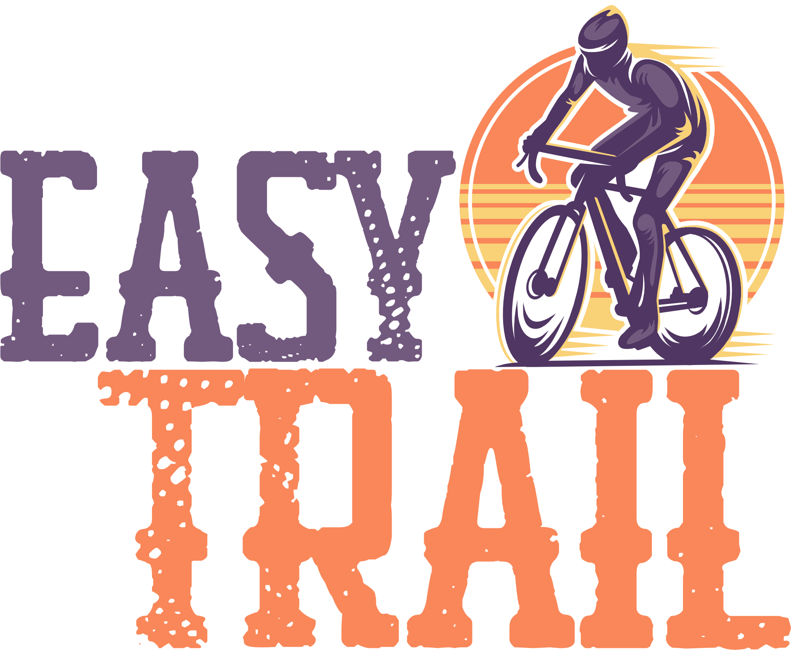

Home
FAQ

Cadastre-se
Entrar
×
Nome
Email
Senha
Repita sua Senha
Cadastrar
Cancelar
×
Usuário
Senha
Entrar
Cancelar
Esqueceu sua
senha?
Perguntas Frequentes (FAQ)
O que é necessário para começar no ciclismo?
Estar sempre prevenido é essencial, especialmente nos pedais mais longos, em que o ciclista fica distante de qualquer assistência. Possuir alguns equipamentos, ferramentas e insumos “só para garantir” também oferece maior confiança, um fator muito necessário para quem dá os primeiros passos no ciclismo, tais como:
Capacete, o mais essencial dos equipamentos.
Óculos de ciclismo, Luvas, cotoveleira e joelheira.
Para passeios noturnos roupa e/ou colete refletor, lanternas, tanto traseiras como dianteiras.
Garrafa de água com suporte, mochila com alimentação e água adicional.
Roupa apropriada para ciclismo.
Kit de ferramentas
Sapatilhas para ciclismo
O que o ciclista deve fazer?
Confira algumas regras e boas práticas que devem ser adotadas pelos ciclistas no trânsito:
Andar na faixa da direita
Ultrapassar veículos com segurança
Nunca andar na contramão
Controlar a velocidade
Respeitar os pedestres
Respeitar os faróis
Evitar calçadas
Ter cuidado com cruzamentos
Sinalizar intenções de passagem
Cuidado com abertura de portas dos veículos
Utilize pneus de acordo com o trajeto que for realizado, você sentirá mais conforto e segurança em realizar o trajeto
Recomendações aos ciclistas
Faça-se visível
Agradeça e seja cordial
Respeite as leis de trânsito e itens de segurança obrigatórios da bicicleta (retrovisor esquerdo, campainha, sinalização noturna traseira e dianteira, refletores laterais e nos pedais)
Utilize refletores e iluminação à noite
Fique sempre atento a obstáculos
Planeje seu caminho antes de iniciá-lo e dê preferência a vias de menor tráfego
Nas travessias de pedestre, o ciclista deve descer da bicicleta e atravessar como pedestre
Nas travessias exclusivas de ciclovia, o ciclista deve parar a bicicleta e fazer o sinal de vida
Alimentação no ciclismo
Proteína
A recomendação de proteína gira em torno de 1,5 a 2g/Kg de peso corporal/dia. O baixo consumo de proteína pode comprometer a massa muscular e imunidade e pode gerar fraqueza e até anemia.
Fontes proteicas:
carnes magras (frango/peixe/carne), ovos, leite e derivados, whey protein, feijões, entre outras.
Carboidratos
Uma ingestão adequada de carboidratos é importante para evitar/retardar a fadiga, evitar lesões e também a perda de massa muscular. A recomendação do consumo de carboidrato gira em torno de 5-10g/kg de peso corporal/dia (dependendo da duração de cada treino), para conseguir armazenar glicogênio muscular (que é a energia armazenada nos músculos). Mas vale lembrar que isso é uma recomendação, ou seja, o ideal é ter uma orientação individualizada de um nutricionista esportivo.